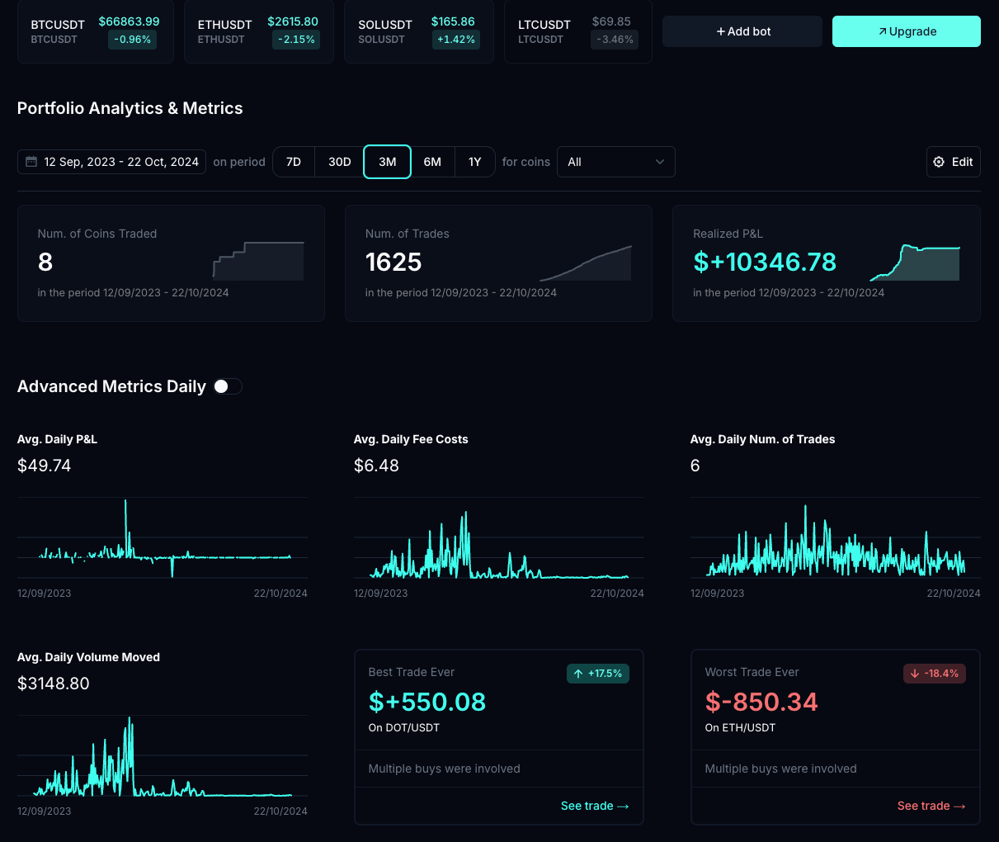

I am a Software Engineer with experience in full-stack development and cloud technologies. I have worked at notable companies including Amazon and Generali Insurance, where I developed scalable solutions and improved existing systems.
Currently, I am the Co-Founder and CEO of DipSway, a crypto-software self-bootstrapped startup, where I lead product development and business strategy.
Additionally, I offer consulting services to businesses looking to improve their cloud infrastructure and software development processes.
Startup Experience
San Francisco, California, USA | Apr 2025 - May 2025 · 2 months
• Experience with 30 of the most exciting web3 startups demo their apps
• Onchain AI Agents
• Blockchain games
• Consumer crypto apps
San Francisco, California, USA | Feb 2025 - Apr 2025 · 3 months
• Ship[it] accelerator program
• Shipped Bluvo, one API for all Crypto Exchanges
Tallinn, ET | Oct 2022 - Present
• Led DipSway's growth from inception to over 1000 active crypto trading bots, achieving 99% uptime and handling $20-50M in trading volume across multiple exchanges.
• Developed a high-performance infrastructure that ensures seamless integration with 11+ exchanges, overcoming significant technical and security challenges to optimize trading execution with geo-localized server optimization.
• Increased conversion rates by 12% through data-driven A/B testing and continuous user experience improvements, enhancing user engagement and decision-making processes.
• Launched innovative AI-driven features, like the 'Autopilot' system, which empowers users by automating asset selection and optimizing bot configurations, making high-level trading accessible to retail users.
 • Fostered a competitive environment with the launch of a live bot leaderboard, driving a 10x increase in user engagement by creating transparency and motivation within the community.
• Navigated complex business challenges, including securing banking solutions and continuously refining product-market fit to adapt to the evolving crypto space.
Tallinn, ET | Nov 2024 - Present
• Developed in 48h a SaaS product that allows users to catch the emails of their website visitors
• Implemented a real-time dashboard that shows the number of emails caught and the conversion rate
• Integrated with MailerLite and MailChimp to send automated emails to the caught emails
• Reached 100+ users in the first month of operation
Tallinn, ET | May 2024 - Aug 2024
• Developed a LLM based blog generator that creates SEO optimized articles
• Built scraping tool to extract data from Google and Bing search results to generate content that ranks on the first page
• Automated website deployment on sub-domains with AWS Route 53 and CloudFront using GitHub Actions and SST
• Closed an exit deal with a content marketing agency for a 4 digit sum after 3 months of operation
Competitive Programming
Remote | Apr 2017 - Present
• Solved 310+ competitive programming problems over 7 years of timespan
• Mentored 50+ students willing to participate in the Italian Olympiads of Informatics resulting in bronze and gold medals.
• Developed educational content for dynamic programming and graph algorithms
Professional Experience
San Francisco, California, USA | Feb 2025 - Present · 4 months · Hybrid
• Implemented CI/CD pipelines for continuous integration and deployment
• Developed core systems using Rust for high-performance and memory safety
• Built one API for all crypto exchanges with seamless integration capabilities
Luxembourg | Feb 2022 - Oct 2022
• Collaborated with research team to design an algorithm that improved inventory optimization
• Developed serverless stack with AWS CDK, reducing execution costs by 180%
• Implemented warehouse & transportation network optimizations
Venice, IT | Jun 2021 - Feb 2022
• Built SpringBoot application for insurance proposals using design patterns
• Implemented CI/CD pipelines with Jenkins for documentation deployment
• Reduced code base by 20% through efficient design patterns
Venice, IT | Sep 2019 - Jun 2021
• Developed PDF certificate generation system for citizens
• Created whistleblower software that was sold to 11+ public companies
• Increased customer base by 20% through product development
Technical Skills
Programming Languages: Java, C/C++, JavaScript, TypeScript, Dart, Python, Go, Ruby, Rust, Swift, PHP, Elixir
Web Technologies: HTML/CSS, Angular, Astro, Next.js, Nuxt, Vue.js, React, Django, Flask, Rails, Sinatra, Svelte, Tailwind CSS
Cloud & DevOps: AWS (EC2, Lambda, S3, CloudFormation, RDS, Route 53, EKS), Terraform, AWS CDK, Docker, Kubernetes, Jenkins, CircleCI, GitLab CI, ArgoCD, CloudFront, Vercel, SST, Netlify, Nginx, HAProxy, Consul, HashiCorp Vault, Packer, Ansible, Pulumi, Serverless Framework
Databases: PostgreSQL, SQLite, MongoDB, DynamoDB, Redshift, MySQL, Aurora, Firebase, Redis, ElasticSearch, Cassandra
Infrastructure as Code (IaC): AWS CloudFormation, Terraform, AWS CDK, Pulumi, Ansible, Chef, Puppet
Monitoring & Logging: Grafana, Prometheus, ELK Stack, Datadog, CloudWatch, New Relic, Sentry, Loki, PagerDuty
Mobile Development: Flutter, Android, iOS (Swift/Objective-C), React Native, Kotlin, Xamarin
CI/CD & Automation: Jenkins, CircleCI, GitLab CI, Travis CI, GitHub Actions, Spinnaker, ArgoCD, Buildkite
Security: OAuth, JWT, SSL/TLS, AWS IAM, IP Whitelisting, HashiCorp Vault, AWS Secrets Manager, Infisical, Snyk, OWASP ZAP, Penetration Testing
Containerization & Orchestration: Docker, Kubernetes, Helm, AWS ECS, Docker Compose, Mesos, OpenShift
Networking & Load Balancing: AWS VPC, CloudFront, Route 53, Nginx, HAProxy, API Gateway, Cloudflare, Traefik
Other: Git, Linux, Vim, Unity, C4D, Segment, MixPanel, HotJar, Google Analytics, Microsoft Clarity, MailerLite
Contact
Feel free to reach out regarding opportunities or collaborations.Email: sabaniforian@gmail.com
Personal projects I'm proud of:
C++ - Dijkstra's Algorithm - Math - Geometric

• Developed a C++ program that simulates the logistic operations of an airport
• Implemented Dijkstra's algorithm to find the shortest path between two points considering transportation carpet that moves objects 2X faster
• Utilized geometric calculations to optimize the angle at which the object should join or leave each carpet
• Created a friendly view with SFML library
C++ - Dijkstra's Algorithm - Math - Geometric
• Developed a C++ game that simulates a RogueLike game
• Implemented Dijkstra's algorithm to find the shortest path between players
• Built custom data-structure to handle lighting and shadows
• Created a friendly UI with SFML library
Rust - ML Genetic Algorithm - Raylib - Geometric


• Developed a Rust program that simulates worms eating food
• Implemented a genetic algorithm to train worms to eat food
• Built and trained a model to predict the best path for the worm to eat food
• Created a friendly UI with Raylib library